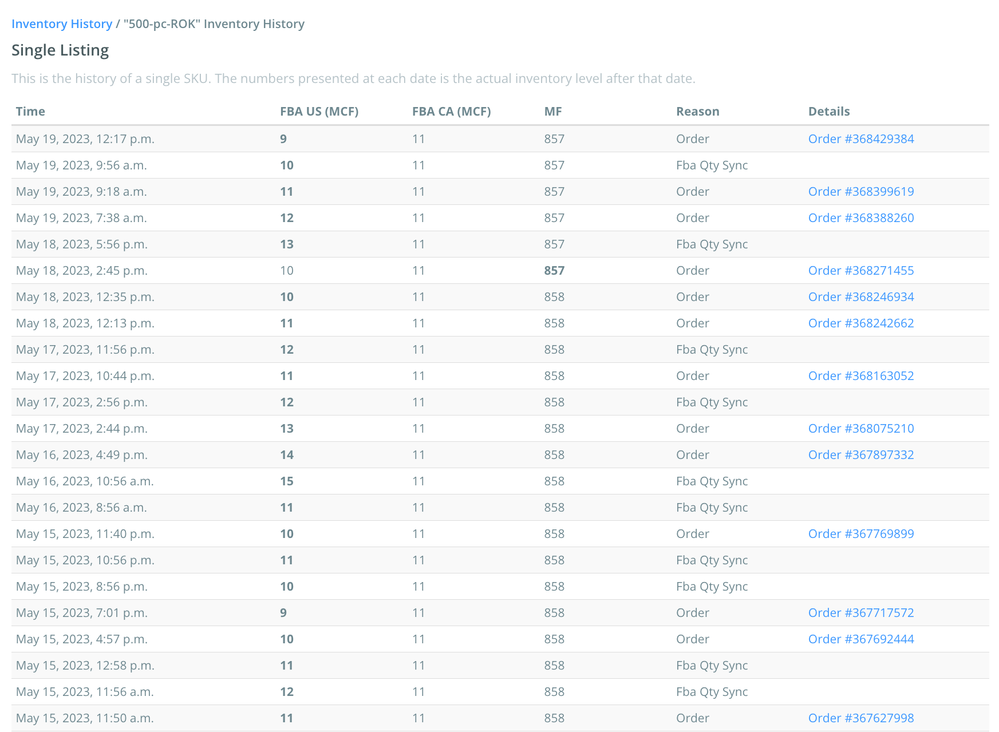

Learn how to review inventory changes in Listing Mirror
Inventory history allows you to see how much inventory you have for a given inventory source, and what caused it to change.
We'll continue to track all inventory changes as long as a product is in Listing Mirror.
View page
If you delete a product from Listing Mirror, the inventory history will be removed with it.
Understanding the inventory history page
Below is an example of a user's inventory history page.
Bold numbers indicate inventory updates, after it's been updated.

Columns
- Time: Indicates when the quantity was updated.
- FBA, MF, etc.: Indicates which Inventory Source had its quantity updated.
- Reason: Indicates who or what updated the quantity.
- Details: Indicates who or what caused the inventory to update.
Reasons
- Activation: Indicates a listing has been imported into Listing Mirror.
- API / FTP Sync: Indicates your API or FTP has updated inventory.
- Bulk Upload: Indicates a user has updated inventory using a Bulk Edit Template.
- Listing Edit: Indicates a user has updated inventory using the interface.
- Order: Indicates an order has been placed.
- X Qty Sync: Indicates we've received an inventory update from a respective 3PL. X represents your 3PL.